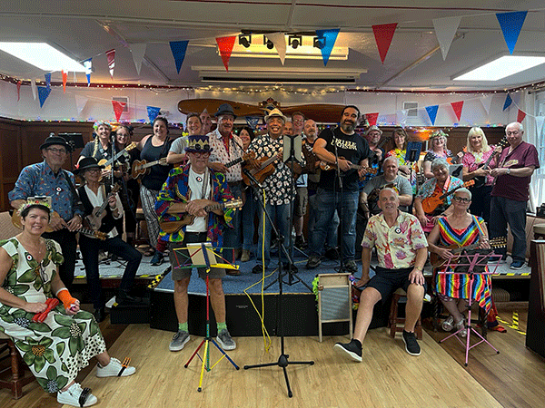

|
|
Come Join The Fun Times |
|
Everything Ukulele
Skydogsports
|
|
Come Join The Fun Times |
|
Ukulele Time
2025 & Newer Zoom
Performances
Ukulele Time
All 1,200 + Zoom Performances
On This Page
Click On The Disc Above To Hear
Skydog's Solo Ukulele Favourites 2022
Click On The Disc Below To Hear
Skydog's Ukulele Collaborations 2022
With Ukulele Players From Around The World

1,276 Performances on This Page
2025 Zoom Performances
---2025---
|
"Will The Circle Be Unbroken" by Mike Boldi, Mary Heaton and Keith Fukumitsu |
|
"Ghost Riders In The Sky with Chickens" by Roger, Larry & Bob |
|
"Today I'm Gonna Try And Change The World" by Sharon Nordick |
|
"One Is The Loneliness Number" by Annie Goldman Liebert & Skydog |
|
"You're Gonna Miss Me When I'm Gone" Live by Larysa, Cathy and Robin at HamJam March 3, 2025 |
---2024---
2024 Zoom Performances
---2024---
|
"Tie A Yellow Ribbon Around The Old Oak Tree" by Joe Kauanui |
--------------------------1,100--------------------------
Mary Heaton Plays In England the UK

|
"Love & Honesty" by Patty Silva & Keith Fukumitsu Live From Hawaii |
|
"Love & Honesty" by Patty Silva & Keith Fukumitsu on Lisa's Zoom |
|
"Brother Can You Spare Me A Dime" "Acapella" by Vivian Diaz Patel |
|
"HamJam" "Toes In The Water" by Skydog Live September 1, 2024 |
|
"Love Will Keep Us Alive" by Roy Forget & Precious Nuque "Live" |
|
"She Called Me Baby Baby All Night Long" by Roger Christiansen |
*************1,000 *************
|
"Lucy In The Sky With Diamonds" by Lisa Kljaich "The Ukulele Fool" |
|
"Lisa's Friday Night Special" June 7, 2024 "The Ukulele Fool" |
|
"Lisa's Friday Night Special" May 31, 2024 "The Ukulele Fool" |
|
"Where Did That Come From & "Jamaica In The Moonlight" by Joe Kauanui |
|
"Wellerman Song" by Mary Lou Hunter & Robin Rundle Drake Live at HamJam |
|
"Wouldn't It Be Wonderful" by Lisa Kljaich "The Ukulele Fool" |
|
""Do You Love Me" by Mary DeVincenzo & John Watson Live ay HamJam |
|
"Today I'm Gonna Try And Change The World" by Sharon Nordick |
------------------------------------------------------------900------------------------------------------------------
|
"Dream A Little Dream Of Me" by The "Ukulele Fool" Lisa Kljaich |
|
"He's Got The Whole World In His Hands" by Lori Darling & Skydog Live |
|
"I Can't Help Falling In Love With You" by Larry Ellis & Lou Iglesias |
2023 Zoom Performances
---2023---
|
"He Stopped Loving Her Today" "Live" Remix by Skydog November18, 2023 |
|
"Where Were You When The World Stopped Turning" by Skydog November 2023 |
This list starts on October 20, 2022
For 600 older Zoom Performances Click Below
Thanks For Watching
|
|
|
My First Ukulele |